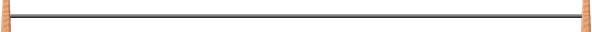

|  |
CTU Open Contest, 2006
Toto je průběľný seznam týmů přihláąených do soutěľe ke dni 28.10. 2006, 09:38. Pokud jste se přihlásili před tímto datem, a nejste na tomto seznamu, kontaktujte prosím webmastera.
| # | jména souteľících | fakulta | ąkola | |
|---|---|---|---|---|
| 1. | Martin Labaj | FIIT | STU Bratislava | |
| Karol Rástočný | FIIT | |||
| Jozef Janoąík | FIIT | |||
| 2. | Daniel Svonava | FIIT | STU Bratislava | |
| Michal Lohnicky | FIIT | |||
| Dusan Palo | FIIT | |||
| 3. | michal trna | FEL | ČVUT Praha | |
| petr malát | FEL | |||
| mikula pavel | FEL | |||
| 4. | Martina Chabadova | FIIT | STU Bratislava | |
| Lucia Jastrzembska | FIIT | |||
| Tomas Jelinek | FIIT | |||
| 5. | Jan Bím | N/A | Gymnázium Arabská | |
| Petr Kadleček | N/A | |||
| Pavel John | N/A | |||
| 6. | ©tepán Kopřiva | FEL | ČVUT Praha | |
| Pavel Bucek | FEL | |||
| Marek ©mid | FEL | |||
| 7. | Jakub Tekeµ | FIIT | STU Bratislava | |
| Michal Poláčik | FIIT | |||
| Tomáą Hajas | FIIT | |||
| 8. | Stanislav Böhm | FEI | V©B-TU Ostrava | |
| Vít Ar»uąenko | FEI | |||
| 9. | Radek Holý | N/A | Gymnázium Arabská | |
| Zbynek Jiráček | N/A | |||
| Martin Pokorný | N/A | |||
| 10. | Andrej Fogelton | FIIT | STU Bratislava | |
| Ivan Plesko | FIIT | |||
| Martin Palo | FIIT | |||
| 11. | Ramunas Belkauskas | FEL | ČVUT Praha | |
| Géza Prouza | FEL | |||
| Petr ©paček | FEL | |||
| 12. | Ondřej Novák | V©E | ČVUT Praha | |
| ©tepán Tesař | FEL | |||
| 13. | Zdenko Porubčan | FIIT | STU Bratislava | |
| Boris Rakús | FIIT | |||
| Marek Sojka | FIIT | |||
| 14. | Miloą Janek | FEL | ČVUT Praha | |
| Pavel Hradský | FEL | |||
| Július Bemą | FEL | |||
| 15. | Michal Máca | FEL | ČVUT Praha | |
| Michal Matuąka | FEL | |||
| Tomáą Macik | FEL | |||
| 16. | Jan Pospíąil | FEL | ČVUT Praha | |
| Pavel Pospíchal | FEL | |||
| Vít Prajzler | FEL | |||
| 17. | Josef Fiktus | FEL | ČVUT Praha | |
| 18. | Petr Kratochvíl | FAV | ZČU Plzeň | |
| Vladimír Aubrecht | FAV | |||
| Martin Konkol | FAV | |||
| 19. | Jaromír Janisch | FAV | ZČU Plzeň | |
| Jiří Skála | FAV | |||
| Michal Kratochvíl | FAV | |||
| 20. | Tomáą ©turm | FEI | V©B-TU Ostrava | |
| Petr Joachim | FEI | |||
| Michal Peąat | FEI | |||
| 21. | Peter Bella | MFF | UK Praha | |
| Josef Cibulka | MFF | |||
| Milan Straka | MFF | |||
| 22. | Aleą Kučík | FEL | ČVUT Praha | |
| Michal Charvát | FEL | |||
| 23. | Jan Bulanek | MFF | UK Praha | |
| Peter Černo | MFF | |||
| Falt Zbynek | MFF | |||
| 24. | Peter Kuma | FIIT | STU Bratislava | |
| Martin Petráą | FIIT | |||
| Milan Ilavský | FIIT | |||
| 25. | Jiří Janda | FEL | ČVUT Praha | |
| Ondřej Brynda | FEL | |||
| Michal Benátský | FEL | |||
| 26. | Rastislav Barlík | FIIT | STU Bratislava | |
| Martin Bartoąek | FIIT | |||
| Marek Desatník | FIIT | |||
| 27. | Jaja Marek | FEL | ČVUT Praha | |
| Daniel Modry | FEL | |||
| 28. | Radek Pelanek | FI | MU Brno | |
| Tomas Hanzl | FI | |||
| Tomas Hanzelka | FI | |||
| 29. | Lubomír Holub | PRF | V©B-TU Ostrava | |
| Zdenek Melią | PRF | |||
| Jaroslav ®áček | PRF | |||
| 30. | Michal ©tefuą | FRI | ®ilinská Univerzita | |
| Peter Hanula | FRI | |||
| Andrej Krivulčík | FRI | |||
| 31. | Ivan Mellen | FRI | ®ilinská Univerzita | |
| Marek ©ajna | FRI | |||
| Roman Brią | FRI | |||
| 32. | Ondrej Sňahničan | FRI | ®ilinská Univerzita | |
| Slavomír Hoą»ák | FRI | |||
| Peter Goga | FRI | |||
| 33. | Marek Tesař | MFF | UK Praha | |
| Tomáą Dzetkulič | MFF | |||
| Milan ©atka | MFF | |||
| 34. | Ondřej Jamriąka | FEL | ČVUT Praha | |
| Jan Kříľ | FEL | |||
| Jiří Douąa | FEL | |||
| 35. | Rastislav Lenhardt | FMFI | UK Bratislava | |
| Matúą Fedák | FMFI | |||
| Ján Mikuláą | FMFI | |||
| 36. | Stanislav Hotmar | FEL | ČVUT Praha | |
| 37. | Tomáą Gavenčiak | MFF | UK Praha | |
| Cyril Hrubią | MFF | |||
| Jan Kadlec | MFF | |||
| 38. | Petr Chalupa | FI | MU Brno | |
| Sven Draľan | FI | |||
| Jana Fabriková | SCI | |||
| 39. | Martin Duąek | FEL | ČVUT Praha | |
| Jan Chochol | FEL | |||
| Marek Jansta | FEL | |||
| 40. | Michal Vaner | MFF | UK Praha | |
| Ondrej Bilka | MFF | |||
| Daniel Marek | MFF | |||
| 41. | Mravec Pavol | FMFI | UK Bratislava | |
| Balaz Miroslav | FMFI | |||
| 42. | Nikola Beneą | FI | MU Brno | |
| Lukáą Eątvanc | FI | |||
| Karel ©tepka | FI | |||
| 43. | Martin Miklánek | FEL | ČVUT Praha | |
| Vladimír Motyka | FEL | |||
| 44. | Martin Macko | FMFI | UK Bratislava | |
| Burger Michal | FMFI | |||
| 45. | Jan Krčal | FI | MU Brno | |
| Martin Křivánek | FI | |||
| Jaroslav ©edenka | FI | |||
| 46. | Martin Hasaj | FEL | ČVUT Praha | |
| Jan Sousedek | FEL | |||
| Jakub ©tiller | FEL | |||
| 47. | Pavel Číľek | MFF | UK Praha | |
| 48. | Ján Záhornadský | MFF | UK Praha | |
| Zdeňk Viluąínský | MFF | |||
| Duąan Domány | MFF | |||
| 49. | Pavel Kropitz | MFF | UK Praha | |
| Lukáą Kríľik | MFF | |||
| Peter Piják | MFF | |||
| 50. | Radek Maąek | FEL | ČVUT Praha | |
| Radek Podgorný | FEL | |||
| Jiří Pokorný | FEL | |||
| 51. | Ruslan Bagybayev | FEL | CTU | |
| 52. | Ivan Novotný | FI | MU Brno | |
| Martin Hradil | FI | |||
